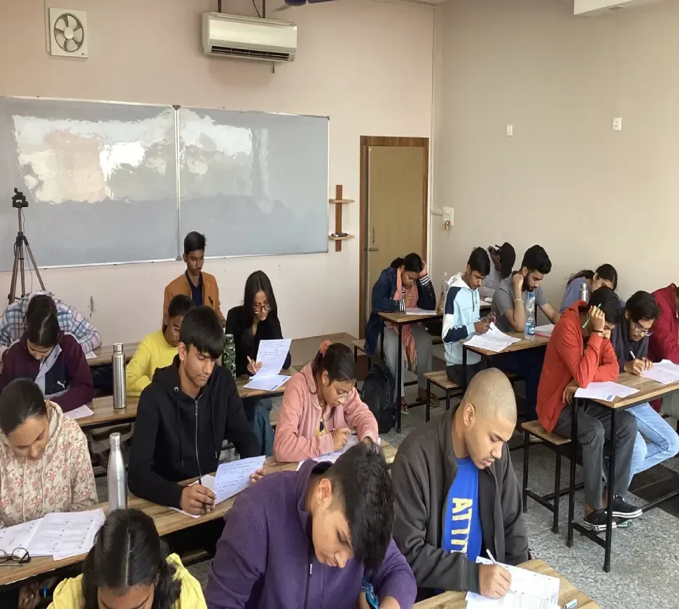
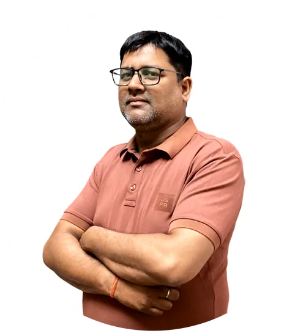

CLASSES 11–12 + DROPPERSTHE ENGINEERING PATH
IIT-JEE
Think deeper. Solve smarter. Build your path to JEE Main & Advanced.
PhysicsChemistryMaths
Explore program Big possibilities begin with a little curiosity.
A LITTLE GUIDANCE. A BIGGER FUTURE.
From your first “why” to your dream IIT or medical college. Learn with clarity, prepare with purpose, and go further with Param.
Expert minds. Personal attention.With you, every step of the way.
Built for your next big step.IIT-JEE · NEET · Foundation
YOUR GOAL. YOUR PATH.
Big goals become possible with small,
consistent steps. Find your path with us.
Think deeper. Solve smarter. Build your path to JEE Main & Advanced.
A stronger grasp of science. A confident step towards a life in medicine.
Turn a love of maths and science into the building blocks of bigger things.
Discover the science of life while building confidence, one concept at a time.
Not sure which path is yours? Let’s figure it out together

A small beginning.
A lasting commitment.
MORE THAN A COACHING INSTITUTE
At Param, you’re never just a roll number. Since 2019, we’ve helped students in Lucknow connect the dots between what they learn and who they want to become.
Founded by Rekha Singh, our institute brings structured learning and genuine personal attention together — for school, boards, JEE, and NEET.
NCERT-focused notes, clear explanations, and everyday examples that make concepts click.
Daily practice, weekly tests, monthly assessments, and thoughtful feedback to guide your next step.
Small batches, one-to-one mentorship, and regular doubt-clearing sessions. We’re in your corner.
GOOD TEACHERS. EVEN BETTER MENTORS.
Subject expertise, a listening ear,
and a genuine investment in your growth.
M.Sc., B.Ed.
Founder, Director & Administrative Head
Building a culture of structured learning, discipline, and belief in every student’s potential.
B.Tech.
Co-Founder & Academic Head
Over 20 years of teaching experience, with a focus on clear concepts and powerful problem-solving.
M.A., B.Ed.
English Language & Literature
A gold medalist and university topper with expertise in literature, language, and linguistics.
M.Tech.
Physics Faculty
Known for making complex concepts simple and engaging. The published profile lists 5 years of experience.
M.Sc. Mathematics
Mathematics Faculty
Helping students develop a strong mathematical foundation. The published profile lists 5 years of experience.
M.Sc.
Chemistry Faculty
Specializes in organic, inorganic, and physical chemistry. The published profile lists 7 years of experience.
B.Sc., BDS
Biology Faculty
Makes biology interesting and easy to understand. The published profile lists 7 years of experience.

COMPUTER SCIENCEB.Tech., M.Tech.
Computer Science Faculty
Guides students in programming and computational thinking. The published profile lists 10 years of experience.
 GENERAL STUDIES
GENERAL STUDIESB.Ed.
General Studies Faculty
Guides students in programming and computational thinking. The published profile lists 10 years of experience.
 MATHEMATICS
MATHEMATICSB.Tech, B.Ed, M.Sc
Mathematics Faculty
Guides students in programming and computational thinking. The published profile lists 10 years of experience.
IN THEIR OWN WORDS
Behind every result is a student who kept going — and a mentor who helped them find their way.
Historical testimonials published by Param Institute.
Individual experiences and outcomes vary.
THIS IS WHERE IT BEGINS
A LITTLE EXTRA DIRECTION
Study strategies, honest guidance, and
insights from the Param resource library.
A guide to choosing the right study material and making it work for you.
Read the guide50 common preparation pitfalls — and practical ways to avoid them.
Read the guideMake a more informed decision about your medical entrance preparation.
Read the guideArticles open on the original Param website. Dated exam-pattern articles are archived references; check the examination authority for current rules.
LET’S CLEAR THINGS UP
Have something else on your mind?
We’re always happy to talk.
Param supports Classes 6–12, with IIT-JEE, NEET, IIT Foundation, and NEET Foundation programs. The institute also offers board-exam support, revision, and crash-course options. Contact the team for your class and subject combination.
Yes. Param offers free demo classes so you can experience the teaching, meet the faculty, and see the learning environment. Send an enquiry or call to agree on a suitable class and time; your demo is confirmed by the institute, not by this website.
The IIT and NEET foundation programs list classroom and online options, including live or recorded support, study material, tests, and doubt-clearing. Please confirm the current online arrangements and batch schedule for your class directly with Param.
Yes. The institute lists dedicated JEE and NEET dropper support, with intensive revision, practice, and regular testing. NEET crash-course enquiries are also welcome. Ask the team about current batches and eligibility.
Fees depend on the course and duration. The institute’s course pages mention scholarships and flexible payment options; please ask for the current fee structure, eligibility, terms, and availability. No prices or scholarship awards are promised on this website.
Weekly tests, monthly assessments, full-length mocks, and detailed feedback help identify strengths and areas to work on. You’ll also have doubt-clearing sessions, mentorship, and regular practice. Foundation programs include parent feedback.
YOUR NEXT CHAPTER STARTS HERE
Let’s talk about your goals, your questions, and the path that feels right for you. No pressure. Just a good conversation.
Tell us a little about yourself.
Choose how to send it below. Finish sending in your chosen app; your demo is confirmed directly by Param.
WhatsApp opens the published phone number; its WhatsApp availability is not verified. If unavailable, use email or call +91 73103 34198. Nothing has been sent or booked by this website.
{kind=link}
{kind=link}
{kind=link}
{kind=link}
{kind=link}
{kind=link}